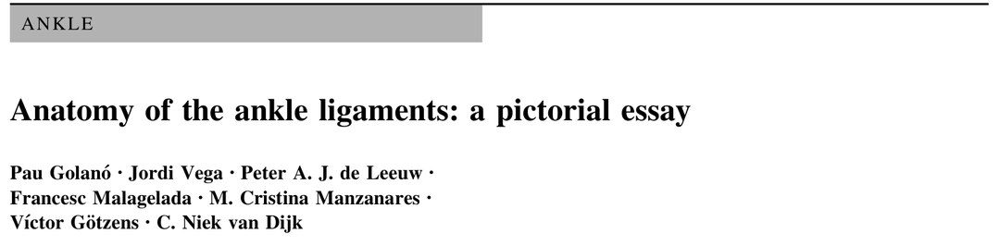
🔖原文首页（KSSTA 2010 年第 18 卷）
📚 文献卡片
▪ 英文原题：Anatomy of the ankle ligaments: a pictorial essay（踝关节韧带解剖：图谱综述）
▪ 作者：Pau Golanó, Jordi Vega, Peter A. J. de Leeuw, Francesc Malagelada, M. Cristina Manzanares, Víctor Götzens, C. Niek van Dijk
▪ 机构：巴塞罗那大学关节镜与外科解剖实验室 · 阿姆斯特丹大学学术医学中心骨科 等
▪ 期刊：Knee Surgery, Sports Traumatology, Arthroscopy（KSSTA）
▪ 年卷期：2010;18(5):557-569
▪ DOI：10.1007/s00167-010-1100-x
▪ 文章类型：图谱综述（Pictorial essay）
▪ 证据级别：原文未标注（属于解剖描述性综述）
▪ 关键词：Ankle anatomy · Lateral collateral ligament · Medial collateral ligament · Ankle impingement · Ankle sprain
"Ankle ligament injury is the most frequent cause of acute ankle pain. Chronic ankle pain often finds its cause in laxity of one of the ankle ligaments."
"踝关节韧带损伤是急性踝痛最常见的原因；慢性踝痛也常常源于某一条踝关节韧带的松弛。"
• 内翻是最常见的损伤机制：距腓前韧带往往最先或唯一受伤；完全断裂时还会累及跟腓韧带和距腓后韧带
• 外翻损伤：可能伤及三角韧带
• 过度背伸：可能伤及下胫腓联合韧带
• 有踝关节韧带损伤史的人，多达 40% 会遗留影响日常生活的症状
这篇来自巴塞罗那解剖实验室的图谱，用 21 幅高清解剖图把踝关节韧带一条条讲清楚。
| 分组 | 包含的韧带 | 常见损伤机制 |
|---|---|---|
| 外侧副韧带 | 距腓前韧带、跟腓韧带、距腓后韧带 | 内翻扭伤 |
| 内侧副韧带（三角韧带） | 浅层：胫舟、胫弹簧、胫距后浅、胫跟韧带 深层：胫距后深、胫距前深韧带 | 外翻扭伤 |
| 下胫腓联合韧带 | 胫腓前韧带、胫腓后韧带（浅部、深部=横韧带）、胫腓骨间韧带 | 过度背伸、外旋 |
一句话概括：看懂韧带的走行和松紧变化，才能理解扭伤机制、撞击症和查体。
说明：图中方位罗盘已改为中文（背侧/跖侧/前方/后方/内侧/外侧/近端/远端），图中数字的含义见每幅图下方。
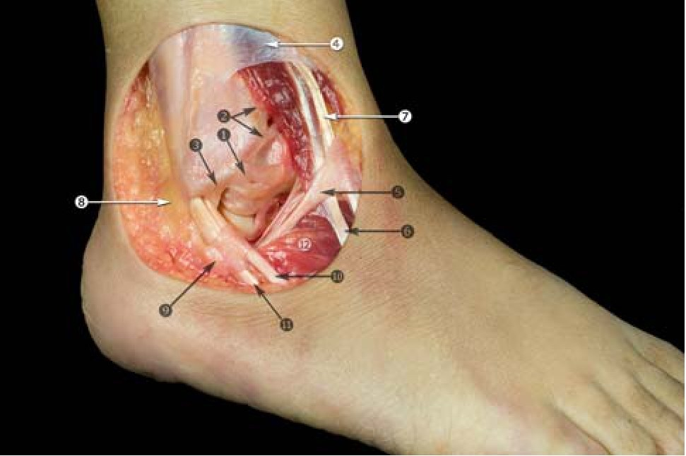
🔖图1：踝关节前外侧观（解剖）
1 距腓前韧带；2 胫腓前韧带；3 跟腓韧带腓骨附着处；4 伸肌上支持带；5 伸肌下支持带；6 第三腓骨肌腱；7 趾长伸肌腱；8 腓骨肌上支持带；9 腓骨肌下支持带；10 腓骨短肌腱；11 腓骨长肌腱；12 趾短伸肌
• 最常受伤：急诊最常见的踝关节损伤；限制距骨前移和踝跖屈
• 双束结构：与关节囊关系密切，通常由上、下两束组成，两束之间有腓动脉穿支及其与外踝动脉的吻合支穿过；文献报道 1～3 束不等，作者解剖中多为双束
• 起止：起于外踝前缘，中心平均在腓骨尖近端 10 mm；向前内走行，止于距骨体外侧关节面前方
• 宽度：6～10 mm，与束数无关，提示束数变异不影响功能
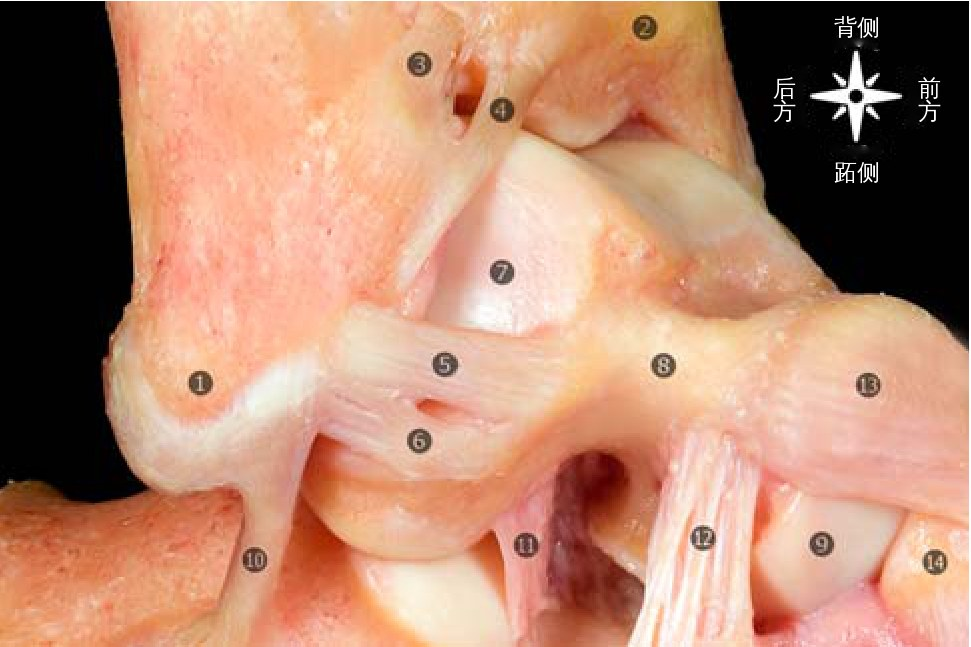
🔖图2：足踝外侧韧带的骨关节解剖，距腓前韧带通常为两束
1 外踝尖；2 胫骨；3 胫腓前韧带；4 胫腓前韧带远侧束；5 距腓前韧带上束；6 距腓前韧带下束；7 距骨外侧关节面；8 距骨颈；9 距骨头；10 跟腓韧带；11 距跟骨间韧带；12 颈韧带；13 距舟韧带；14 足舟骨
松紧变化：中立位时韧带几乎水平；背伸时向上倾斜，跖屈时向下倾斜。只有在跖屈位才紧张，尤其是合并内翻时最容易受伤。跖屈时上束紧张、下束松弛；背伸时上束松弛、下束紧张。
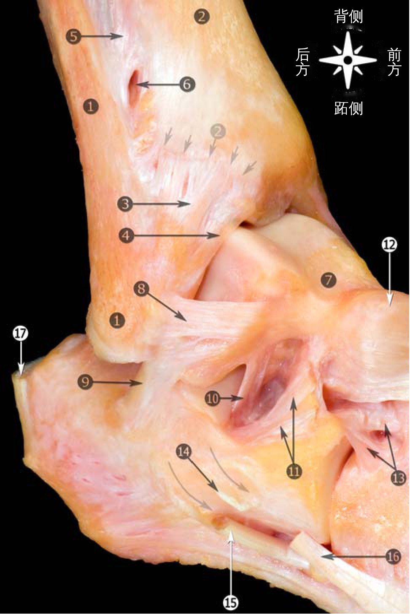
🔖图3：足踝外侧区解剖，显示距腓前韧带与跟腓韧带的形态和关系
1 腓骨及腓骨尖；2 胫骨（箭头示前结节）；3 胫腓前韧带；4 胫腓前韧带远侧束；5 骨间膜；6 腓动脉穿支孔；7 距骨；8 距腓前韧带；9 跟腓韧带；10 距跟骨间韧带；11 伸肌下支持带（已切断）；12 距舟韧带；13 分歧韧带；14 腓骨肌滑车（箭头示腓骨肌腱沟）；15 腓骨长肌腱；16 腓骨短肌腱；17 跟腱
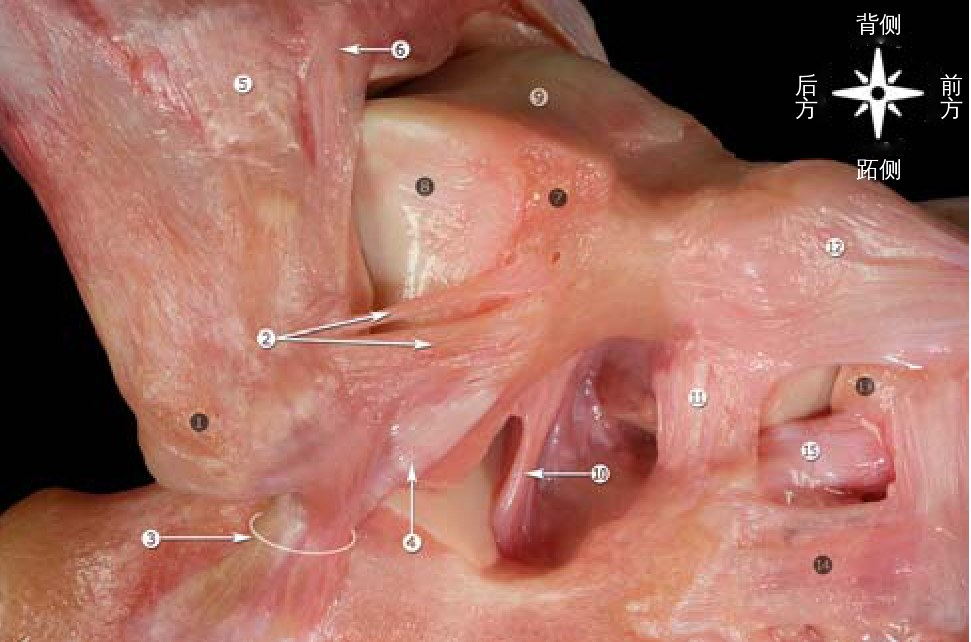
🔖图4：外侧韧带解剖，显示跟腓韧带、距跟外侧韧带与距腓前韧带的关系。有学者描述距腓前韧带存在第三束，但作者从未在解剖中见到；本例上束比通常要细
1 腓骨尖；2 距腓前韧带上束和下束；3 跟腓韧带；4 距跟外侧韧带；5 胫腓前韧带；6 胫腓前韧带远侧束；7 距骨三角区；8 距骨外侧关节面；9 距骨背侧关节面；10 距跟骨间韧带；11 颈韧带；12 距舟韧带；13 足舟骨；14 跟骰外侧韧带；15 分歧韧带（跟舟束）
• 起止：起于外踝前部、距腓前韧带下束正下方（两者之间常有纤维相连）；中立位时向下后斜行，止于跟骨外侧面后部
• 形态：横截面圆形，直径 6～8 mm，长约 20 mm；不属于关节囊，但与腓骨肌腱鞘后内侧部紧密相连，几乎被其完全覆盖，只有约 1 cm 外露
• 唯一跨两个关节的韧带：同时跨越距小腿关节和距下关节，所以既参与踝屈伸，也允许距下关节运动
• 损伤：Broström 发现距腓前韧带合并跟腓韧带断裂约占 20%，单独的跟腓韧带断裂非常罕见
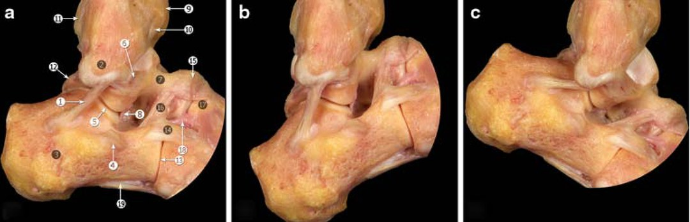
🔖图5：踝关节运动中的跟腓韧带。a 中立位；b 背伸；c 跖屈。跟腓韧带在跖屈时变水平、背伸时变垂直，在整个活动范围内都保持紧张
1 跟腓韧带；2 腓骨尖；3 跟骨；4 腓骨肌滑车；5 距下关节；6 距腓前韧带；7 距骨颈；8 距跟骨间韧带；9 胫骨前结节；10 胫距前韧带；11 胫骨后结节；12 距骨外侧突；13 跟骰关节；14 跟骰外侧韧带；15 距舟韧带；16 颈韧带；17 足舟骨；18 分歧韧带（跟舟束）；19 足底长韧带
距骨外翻时跟腓韧带松弛、内翻时紧张，这解释了为什么即使没有屈伸动作，单纯内翻也能伤到它。
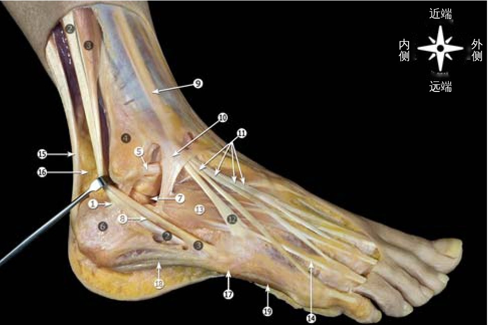
🔖图6：跟腓韧带与腓骨肌腱的关系
1 跟腓韧带；2 腓骨长肌腱；3 腓骨短肌腱；4 腓骨；5 距腓韧带；6 跟骨；7 距下关节；8 腓骨肌滑车处的纤维隔；9 伸肌上支持带；10 伸肌下支持带；11 趾长伸肌腱；12 第三腓骨肌腱；13 趾短伸肌；14 趾短伸肌腱；15 跟腱；16 Kager 脂肪垫；17 第五跖骨粗隆；18 足底筋膜外侧束；19 小趾展肌
跟腓韧带与距跟外侧韧带的变异：
| 比例 | 类型 |
|---|---|
| 35% | 跟腓韧带由距跟外侧韧带加强（两者相连，在近端或远端分开） |
| 23% | 距跟外侧韧带独立存在，位于跟腓韧带前方 |
| 42% | 没有距跟外侧韧带，由距跟前韧带代替；此时跟腓韧带对距下关节稳定的作用更大 |
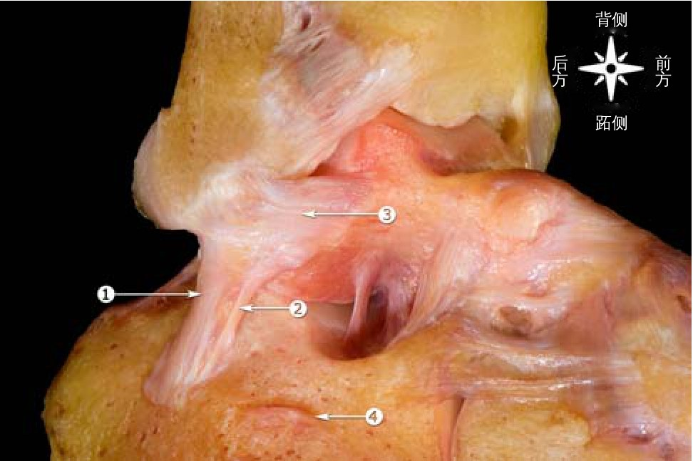
🔖图7：骨关节解剖：跟腓韧带与距跟外侧韧带的关系
1 跟腓韧带；2 距跟外侧韧带；3 距腓前韧带；4 腓骨肌滑车
• 起止：起于外踝内侧面的踝窝，近乎水平走行，止于距骨后外侧；多束结构，可止于距骨后面、距骨外侧突或三角骨，部分纤维参与构成踇长屈肌腱管
• 松紧：跖屈和中立位松弛，背伸时紧张
• 损伤：除非出现明显的踝关节脱位，一般不受伤
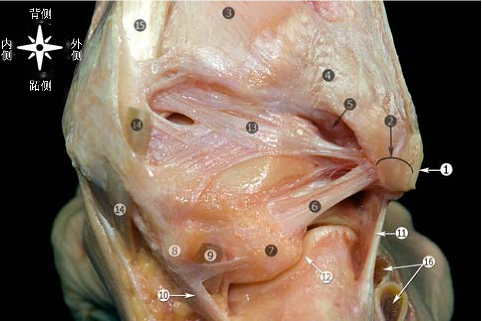
🔖图8：踝关节韧带后面观（解剖）
1 腓骨尖；2 腓骨的腓骨肌沟；3 胫骨；4 胫腓后韧带浅部；5 胫腓后韧带深部（横韧带）；6 距腓后韧带（原文误写为“跟腓后韧带”）；7 距骨外侧突；8 距骨内侧突；9 踇长屈肌腱管；10 踇长屈肌支持带；11 跟腓韧带；12 距下关节；13 后踝间韧带；14 趾长屈肌腱（已切断）；15 胫骨后肌腱；16 腓骨肌腱
距腓后韧带的一部分纤维与后踝间韧带融合。它因与后踝软组织撞击综合征有关而受到关注。
• 出现率：影像和解剖研究报道 19%～100% 不等；作者解剖中恒定存在；Oh 等在 77 个标本中见到 63 个（81.8%），MRI 中 26 例全部可见
• 差异原因：体积小、解剖时难以辨认，也可能与标本数量和人种差异有关；可分为 2～3 束（20%～100%）
• 位置：后面观位于横韧带和距腓后韧带之间，从外下斜向内上
• 松紧：背伸时紧张、跖屈时松弛。强力背伸可致其损伤、断裂或撕脱骨折；跖屈时松弛，可能被夹在胫骨和距骨之间，引起撞击
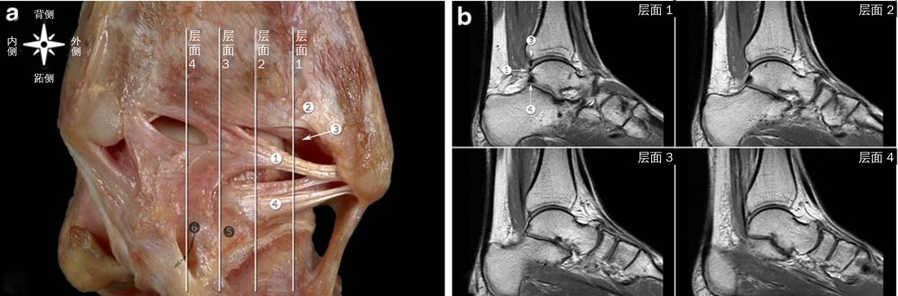
🔖图9：a 踝关节韧带后面观，显示后踝间韧带、距腓后韧带和横韧带的关系；b T1 加权 MRI，与 a 中各层面对应
1 后踝间韧带；2 胫腓后韧带浅部；3 胫腓后韧带深部（横韧带）；4 距腓后韧带；5 距骨外侧突；6 踇长屈肌腱管
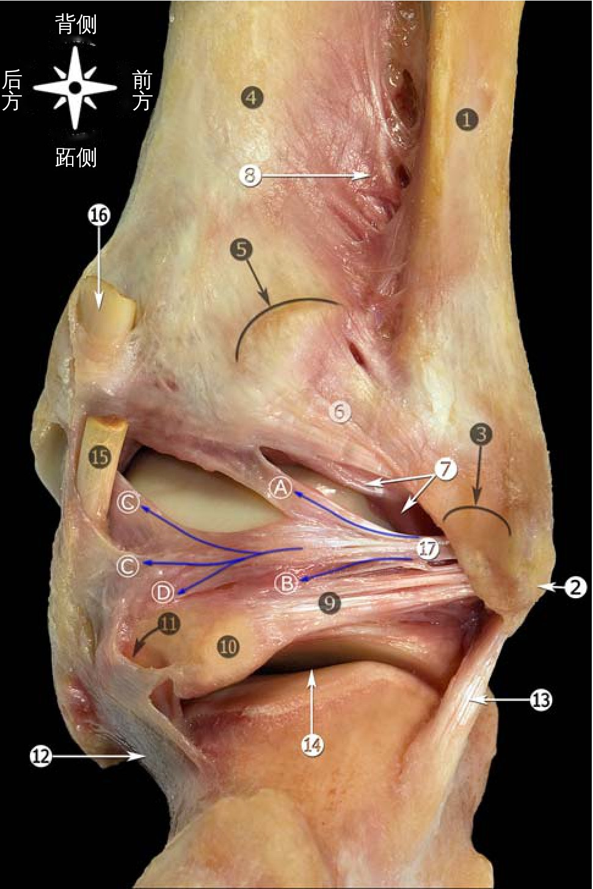
🔖图10：踝关节韧带后面观，显示后踝间韧带及其周围结构
1 腓骨；2 腓骨尖；3 腓骨的腓骨肌沟；4 胫骨；5 胫骨后结节；6 胫腓后韧带浅部；7 胫腓后韧带深部（横韧带）；8 骨间膜；9 距腓后韧带；10 距骨外侧突；11 踇长屈肌腱管；12 踇长屈肌支持带；13 跟腓韧带；14 距下关节；15 趾长屈肌腱（已切断）；16 胫骨后肌腱（已切断）；17 后踝间韧带
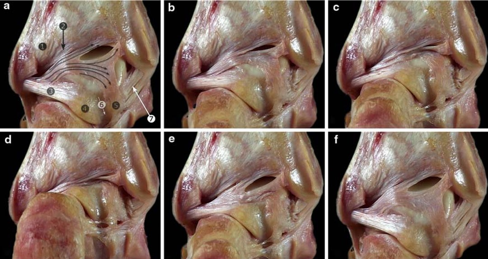
🔖图11：后踝间韧带（箭头）在后踝软组织撞击中的作用：从背伸（a）到跖屈（d），再回到背伸（f）
1 胫腓后韧带浅部；2 胫腓后韧带深部（横韧带）；3 距腓后韧带；4 距骨外侧突；5 距骨内侧突；6 踇长屈肌腱管；7 内侧副韧带深层（胫距后深韧带）
自 2000 年 van Dijk 等开展后踝关节镜以来，后方韧带已经可以在镜下清楚观察和处理。
• 结构：多束韧带，分浅、深两层；起于内踝，止于距骨、跟骨和足舟骨
• 覆盖：胫骨后肌腱鞘覆盖其后部和中部，就像外侧的腓骨肌腱鞘覆盖跟腓韧带一样
• 分束：Milner 和 Soames 描述了 6 个组成部分，其中 3 个恒定存在，3 个可有可无
表 1 内侧副韧带各部分的命名对照
| Milner 和 Soames | Sarrafian |
|---|---|
| 浅层 | |
| 胫弹簧韧带（主要部分） | 胫韧带束 |
| 胫舟韧带（主要部分） | 胫舟束及胫距前浅束 |
| 胫距后浅韧带（附加束） | 胫距后浅韧带 |
| 胫跟韧带（附加束） | 胫跟韧带 |
| 深层 | |
| 胫距后深韧带（主要部分） | 胫距后深韧带 |
| 胫距前深韧带（附加束） | 胫距前深韧带 |
不过作者在解剖中发现，各束大多彼此连续，很难截然分开，单独指认每一束其实有些人为。
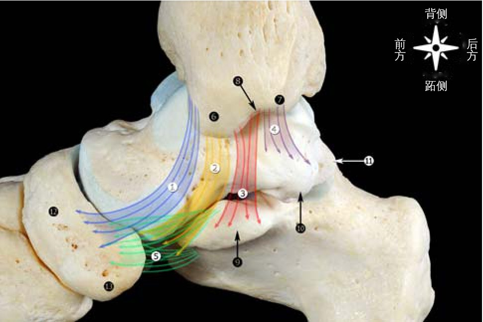
🔖图12：作者解剖中常见的内侧副韧带主要组成示意图。内踝形态有助于理解其起点：内侧面可见前丘和后丘两部分，由丘间沟分开
1 胫舟韧带；2 胫弹簧韧带；3 胫跟韧带；4 胫距后深韧带；5 弹簧韧带复合体（跖侧及内上跟舟韧带）；6 前丘；7 后丘；8 丘间沟；9 载距突；10 距骨内侧突；11 距骨外侧突；12 足舟骨；13 足舟骨粗隆
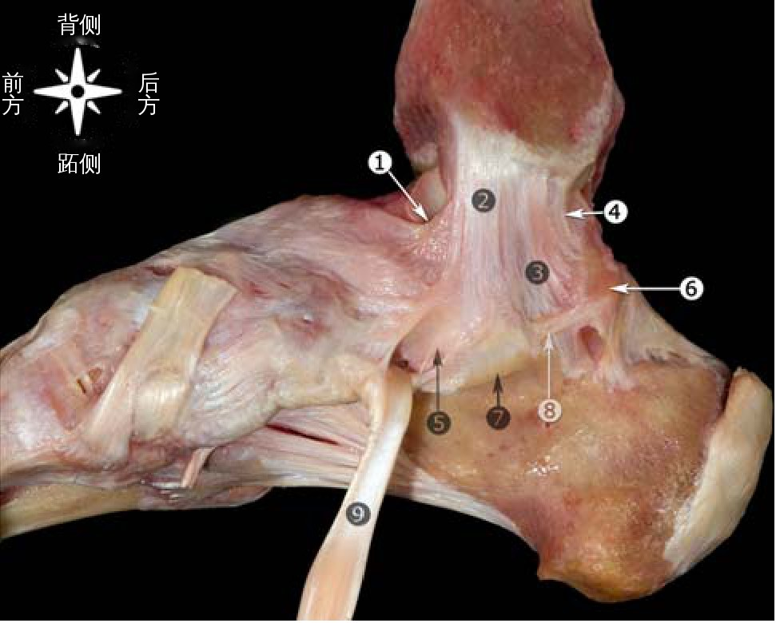
🔖图13：内侧副韧带主要组成部分的内侧观（解剖）
1 胫舟韧带；2 胫弹簧韧带；3 胫跟韧带；4 胫距后深韧带；5 弹簧韧带复合体（内上跟舟韧带）；6 距骨内侧突；7 载距突；8 距跟内侧韧带；9 胫骨后肌腱
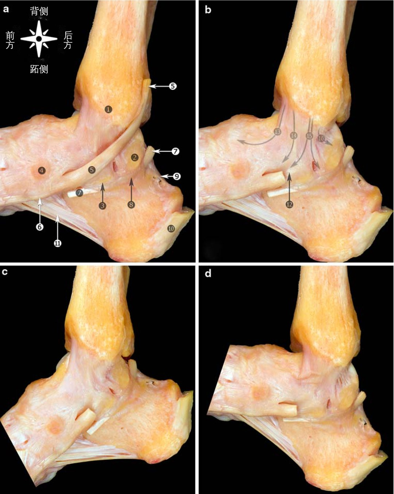
🔖图14：内侧副韧带内侧观。大部分被胫骨后肌腱和趾长屈肌腱覆盖，为显示韧带已去除趾长屈肌腱。a 中立位，显示与胫骨后肌腱的关系；b 去除胫骨后肌腱；c 跖屈，双踝轴线前方的部分紧张；d 背伸，双踝轴线前方的部分松弛
1 内踝；2 距骨外侧突；3 载距突；4 足舟骨；5 胫骨后肌腱；6 足舟骨粗隆；7 踇长屈肌（已切断）；8 踇长屈肌支持带；9 距跟后韧带；10 跟腱（于止点处切断）；11 足底长韧带；12 弹簧韧带复合体（内上跟舟韧带）；13 胫舟韧带；14 胫弹簧韧带；15 胫跟韧带；16 胫距后深韧带
踝穴由胫骨远端和腓骨组成，包住距骨滑车。滑车前宽后窄，所以背伸时腓骨要轻微上移并外旋，以适应变宽的距骨；跖屈时相反。维持胫腓骨稳定、对抗轴向、旋转和平移分离力的，是三条韧带加上骨间膜下段：
• 胫腓前韧带（下胫腓前韧带）
• 胫腓后韧带（下胫腓后韧带）
• 胫腓骨间韧带
骨间韧带止点以下，前方是胫腓滑膜隐窝，后方有一小团脂肪组织，称为滑膜脂肪皱襞。它随踝关节运动上下移动：背伸时退缩到胫腓骨之间，跖屈时下降到踝关节内。这个结构被认为是崴脚后慢性疼痛的原因之一，即前外侧软组织撞击（下胫腓联合撞击）。
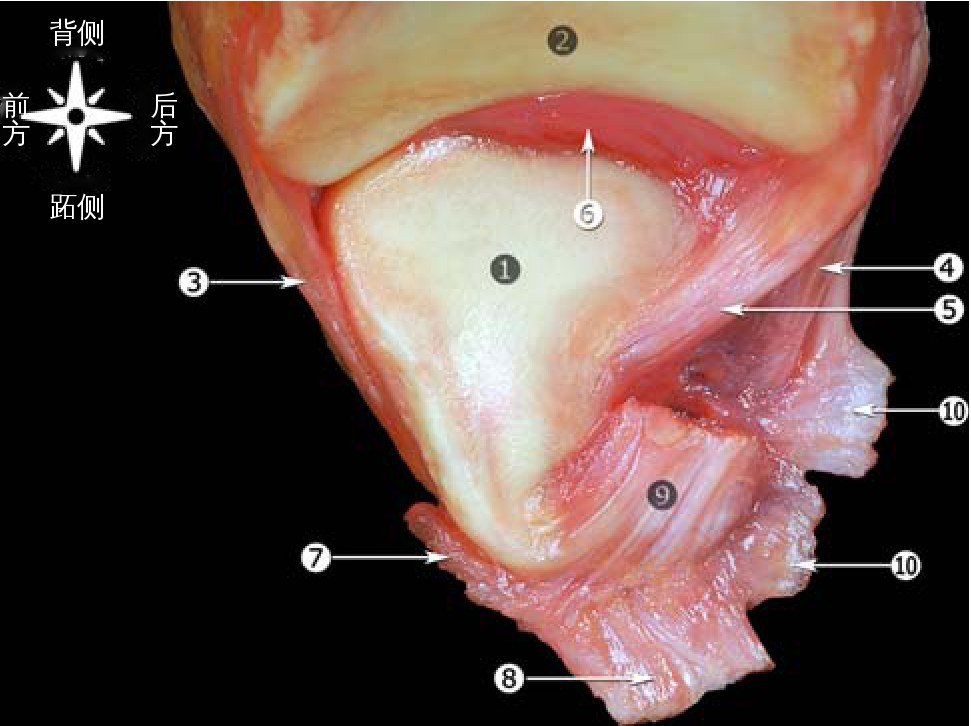
🔖图15：胫腓关节内侧观（已去除距骨）
1 外踝关节面；2 胫骨远端关节面；3 胫腓前韧带（远侧束）；4 胫腓后韧带浅部；5 胫腓后韧带深部（横韧带）；6 滑膜脂肪皱襞；7 距腓前韧带；8 跟腓韧带；9 距腓后韧带；10 腓距跟韧带（Rouvière-Canela 韧带）
• 起止：起于胫骨前结节（平均在关节面上方 5 mm），向远外侧走行，止于外踝前缘；越往远端纤维越长
• 分束：由多束组成，腓动脉穿支从束间穿过；最远端的纤维在起点处容易和距腓前韧带混淆
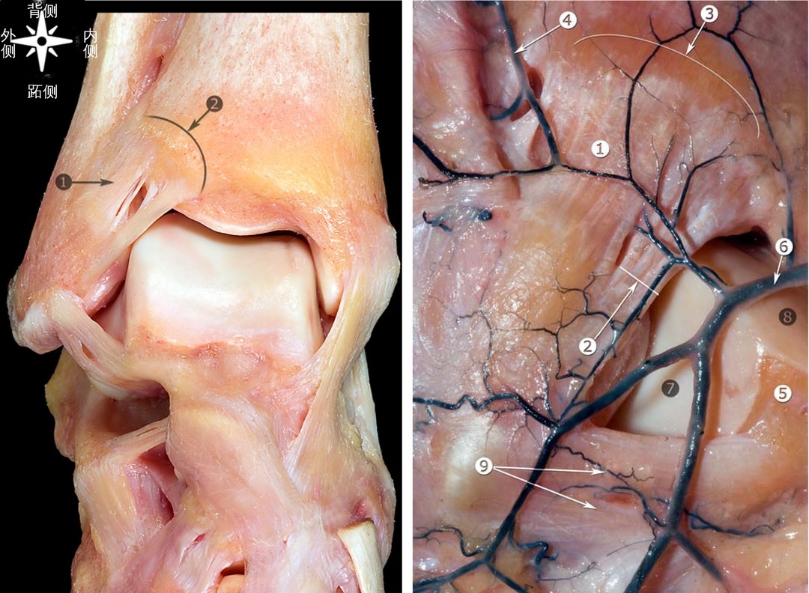
🔖图16（左）：距小腿关节和足背的前上面观。1 胫腓前韧带；2 胫骨前结节
图17（右）：踝关节前外侧部，显示胫腓前韧带与腓动脉穿支的关系（动脉内灌注黑色乳胶）。1 胫腓前韧带；2 胫腓前韧带远侧束；3 胫骨前结节；4 腓动脉穿支；5 距骨三角区；6 踝前动脉；7 距骨外侧关节面；8 距骨背侧关节面；9 距腓前韧带
胫腓前韧带最远端的一束看起来独立于其余部分，由纤维脂肪隔分开，位置也稍深。这一束的病变常被认为是前外侧软组织撞击的原因；切除它（开放或关节镜）常能缓解症状，而且不影响踝关节稳定。
• 机制：外侧副韧带（如距腓前韧带）损伤 → 前后向松弛增加 → 距骨前移 → 远侧束与距骨接触和压力增加
• 解剖因素：韧带在腓骨上的止点越低，中立位接触越多，越容易出问题
• 正常现象：中立位时远侧束与距骨接触在解剖和关节镜下都很常见，应视为正常；关节牵引时接触减少
• 不稳是直接因素：Akseki 发现切断距腓前韧带不改变中立位的接触，但运动中接触明显变化
临床提示：崴脚后踝前外侧慢性疼痛、关节稳定、X 线正常的患者，应考虑这种韧带撞击。
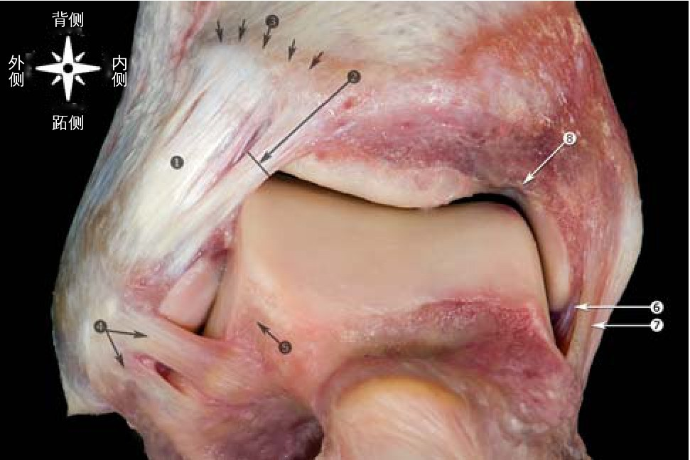
🔖图18：踝关节前方韧带
1 胫腓前韧带；2 胫腓前韧带远侧束；3 胫骨（箭头示前结节）；4 距腓前韧带；5 距骨斜面三角区；6 内侧副韧带深层；7 内侧副韧带浅层；8 Harty 切迹
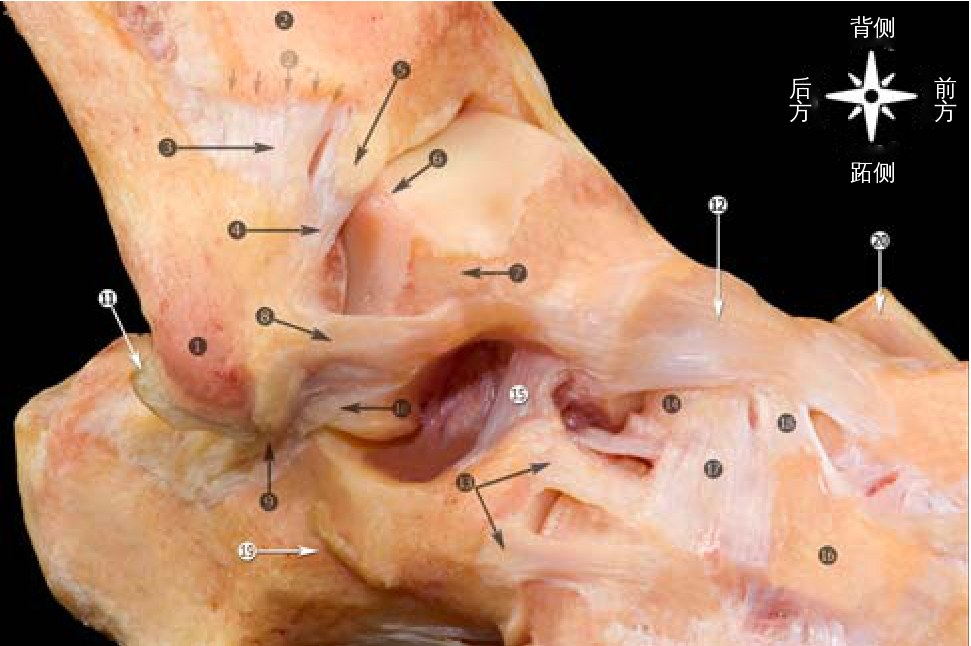
🔖图19：足踝韧带的骨关节解剖
1 外踝尖；2 胫骨（箭头示前结节）；3 胫腓前韧带；4 胫腓前韧带远侧束；5 远侧束胫骨附着处的钙化（影像）；6 胫腓前韧带与距骨接触区域的关节软骨磨损；7 距骨斜面三角区；8 距腓前韧带；9 跟腓韧带；10 距跟外侧韧带；11 软骨缘；12 距舟韧带；13 跟骰外侧韧带；14 足舟骨；15 颈韧带；16 外侧楔骨；17 骰舟背侧韧带；18 楔舟背侧韧带；19 跟骨（腓骨肌滑车）；20 胫骨前肌腱
• 浅部：起于外踝后缘，向近内侧止于胫骨后结节；相当于后方的胫腓前韧带，通常所说的“胫腓后韧带”就是指它
• 深部（横韧带）：呈锥形，起于踝窝近端，止于胫骨后缘、紧贴胫骨下关节面软骨后方，纤维可达内踝；像真正的盂唇一样加深关节，防止距骨后移
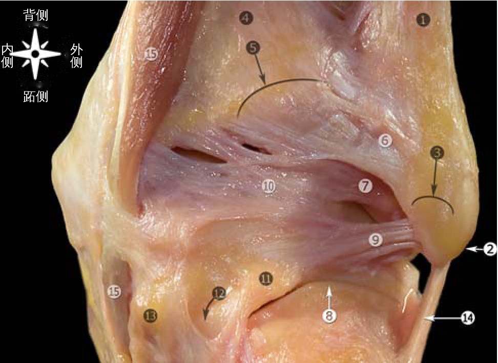
🔖图20：踝关节后方韧带（解剖）
1 外踝；2 外踝尖；3 腓骨肌沟；4 胫骨；5 胫骨后结节；6 胫腓后韧带浅部；7 胫腓后韧带深部（横韧带）；8 距下关节；9 距腓后韧带；10 后踝间韧带；11 距骨外侧突；12 踇长屈肌腱管（肌腱已去除）；13 距骨内侧突；14 跟腓韧带；15 趾长屈肌
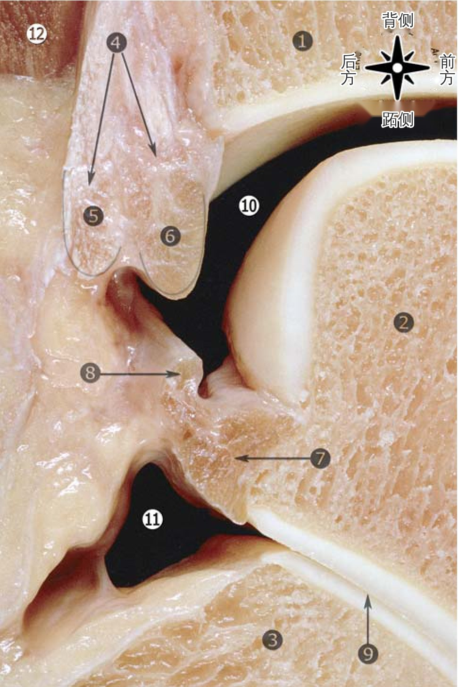
🔖图21：踝关节矢状切面（外侧观）
1 胫骨；2 距骨；3 跟骨；4 胫腓后韧带；5 胫腓后韧带浅部；6 胫腓后韧带深部（横韧带）；7 距腓后韧带；8 后踝间韧带；9 距下关节；10 距小腿关节；11 距下关节后关节囊隐窝；12 踇长屈肌
由致密的短纤维、脂肪组织和腓动脉的小分支组成，连接胫骨和腓骨，可看作骨间膜在下胫腓联合处的延续。有人认为它力学上不重要，也有人认为它是胫腓骨之间的主要连接；Hoefnagels 等认为它对踝关节稳定很重要。
| 机制 | 可能受伤的结构 |
|---|---|
| 内翻 | 距腓前韧带最常见，多为单独损伤；约 20% 合并跟腓韧带损伤；也可伤及关节囊、内侧副韧带或胫腓韧带 |
| 内翻合并跖屈或背伸 | 跖屈时病变以前方为主，背伸时以后方为主；还可伤及后踝间韧带、距骨颈骨软骨区或胫骨前下缘 |
| 外翻 | 内侧关节囊和韧带；受距下关节旋转成分影响较大 |
| 崴脚后 | 软组织撞击综合征通常发生在一次扭伤之后 |
• 性质：解剖图谱综述，以作者团队的尸体解剖观察为主，不涉及临床疗效
• 优点：解剖图质量极高，系统覆盖外侧、内侧和下胫腓三组韧带，并联系撞击症和关节镜
• 原文笔误：讲距腓前韧带宽度时写成了“anterior tibiotalar ligament”（胫距前韧带），应为距腓前韧带；图 8 第 6 项写作“posterior calcaneofibular ligament”（跟腓后韧带），按位置应为距腓后韧带
• 术语提醒：正文说跟腓韧带“extension 时水平、flexion 时垂直”，按欧洲解剖习惯，踝的 extension 指跖屈，与图 5 图注“跖屈时水平、背伸时垂直”一致，阅读原文时容易混淆
• 其他：后踝间韧带出现率文献差异很大（19%～100%），作者“恒定存在”的结论来自自身解剖经验
① 距腓前韧带：最常伤；双束；跖屈＋内翻时最紧、最易伤
② 跟腓韧带：唯一跨踝和距下关节；全程紧张；内翻紧、外翻松；约 20% 合并损伤
③ 距腓后韧带：背伸紧；很少受伤，除非脱位
④ 后踝间韧带：跖屈时可被夹住，导致后踝撞击
⑤ 三角韧带：浅深两层，6 个组成部分，各束实际上难以分开
⑥ 下胫腓联合：胫腓前、后、骨间韧带；胫腓前韧带远侧束可致前外侧撞击
欢迎关注悦美力公众号，获取更多物理治疗的专业知识！
📄参考文献：
Golanó P, Vega J, de Leeuw PAJ, Malagelada F, Manzanares MC, Götzens V, van Dijk CN. Anatomy of the ankle ligaments: a pictorial essay. Knee Surg Sports Traumatol Arthrosc. 2010;18(5):557-569. doi:10.1007/s00167-010-1100-x
本文以开放获取（CC BY-NC）发表。文中图片均来自原文，图中方位罗盘与“Level”标注已改为中文，表 1 已译为中文，仅用于学术交流。